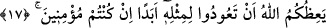
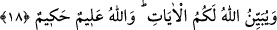

17. Eğer inanmış insanlarsanız, Allah, bir daha buna benzer tutumu
tekrarlamaktan sizi sakındırıp uyarır.
Ey Âişe hakkında uydurulan iftirâyı dillerine dolayanlar! “Eğer” Allah’a, Rasûlüne
ve âhiret gününe “inanmış insanlarsanız,” -çünkü îman buna mâni olur- “Allah, bir
daha” hayâtınız boyunca “buna benzer tutumu tekrarlamaktan” bir daha böyle bir
iftirâyı konuşup diline dolamaktan “sizi sakındırıp uyarır” yâni size öğüt verir.
“
” nasihat edip öğüt vermek ve işlerin sonunu hatırlatmaktır.
Burada bir daha bu gibi bir günaha teşebbüs edenin kendilerini îmandan çıkacağına
işâret vardır. el-Kebîr’de der ki: “Bu iftirâyı konuşan da duyup reddetmeyen de bunda
dâhildir. Çünkü her ne kadar önce olanın günahı daha büyükse de her ikisi de câiz
olmayan bir işi yapmakta eşittirler.
18. Ve Allah âyetleri size açıklıyor. Allah, (işin iç yüzünü) çok iyi bilir, hüküm ve
hikmet sâhibidir.
“Ve Allah” öğüt almanız ve kendileri ile edeblenmeniz için şer’î hükümlere ve güzel
edeblere açık açık delâlet eden “âyetleri size açıklıyor.”
Yâni onları açık ve mânâlarına delâleti zâhir olarak indiriyor. Yoksa önceden böyle
olmayıp da sonradan onları açıklamıyor.
“Allah,” küçük büyük mahlûkâtının her hâlini “çok iyi bilir,” bütün planlarında ve
işlerinde “hüküm ve hikmet sâhibidir.” O halde risâletini tebliğ için seçtiği ve halkı
günahlardan arındırıp hakka çağırmak üzere görevlendirdiği zâtın haremi hakkında
söylenenler nasıl doğru olabilir?
Kâşifî der ki: “Allah Teâlâ, Hz. Âişe’nin iffet ve namusunun temiz olduğunu bilir.
Yine Allah, onun âr ve namusunun pak olduğu husûsunda hüküm vermiştir.”
Onun iffet ve ismet yakası hatâ ve kir pisliğinden arınmıştır
Onun ayıbını arayan baştan ayağa çirkefe bulanmıştır
Şâir ne de güzel söylemiştir:
Senin namusunu ayıplamak kimin haddine?
Gül yaprağına damlayan yağmur damlası gibi pâksın